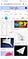

What a tweet really is?

Rather than being this bird a twit should be this price of paper on which you write a short message before modeling it like a plane and throwing it. It will radimlu fall on a group of people that will engage with it a rate the message the more they rate it as good the more you are a good thrower which means you will be throwing farer and farer reaching more and more people.
The dynamics should be the same for all throwers because the wind is.
A tweet is not a bird it is a plane like this
